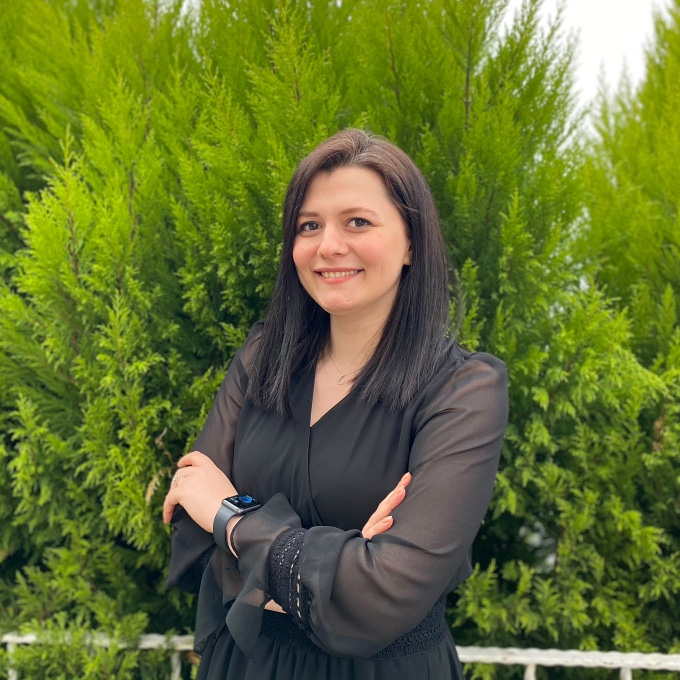

Kariyer zaman çizelgesi
- Finans ve kontrol
- BI ve veri
Yeni iş birliklerine açığım
Business Intelligence & Data Warehouse Developer
Veriyi yalnızca raporlamıyor, anlamlandırıp öngörüye dönüştürüyorum. Finans kökenli altyapım ve 8+ yıllık kurumsal deneyimimle sağlam, ölçeklenebilir veri ambarı çözümleri kuruyorum.

Pano
Deneyimimi bir BI panosu gibi özetledim. Süreler bugünün tarihine göre otomatik hesaplanır.
Çubuğa tıklayarak projeleri filtrele.
Hakkımda
Digiturk’te veri modelleme, ETL süreçleri (ODI), veri kalitesi ve kontrol mekanizmaları, yüksek hacimli veri performans optimizasyonu ve analitik raporlama altyapıları üzerinde çalışıyorum. Analitik ve yapay zekâ projeleri için güvenilir veri zeminleri oluşturuyorum.
Finansal kontrol ve iç denetim geçmişim sayesinde analitik çıktıları iş etkisi, risk ve finansal karşılık açısından değerlendirip karar vericiler için anlamlı içgörülere dönüştürebiliyorum. BI, ileri analitik ve yapay zekânın kesiştiği alanda değer üreten ekiplerde yer almayı hedefliyorum.
Yetenekler
Veri mühendisliğinden analitik raporlamaya uzanan temel yetkinliklerim.
Deneyim ve eğitim
Veri modelleme, ODI ile ETL, veri temizleme ve kalite kontrolü, performans optimizasyonu, raporlama, dokümantasyon ve veri güvenliği.
Finansal kontrol süreçleri.
İç kontrol süreçleri.
Finansal kontrol destek çalışmaları.
Bilgi sistemleri ve yönetim odaklı lisansüstü eğitim.
İşletme temelli lisans eğitimi.
Projeler
Digiturk’te veri altyapısından analitiğe ve yönetişime uzanan, üzerinde çalıştığım başlıca alanlar.
Bu kategoride çalışma alanı yok. Başka bir kategori seçebilirsin.
Graphify
Araçlarım, yetkinliklerim, çalışma alanlarım ve kurumlar arasındaki bağlantılar. Bir noktaya tıkla, bağlantılarını ve ilgili siteyi gör.
Birlikte çalışalım
Aşağıdaki alanlarda destek verebilirim. Size uygun olanı seçin, mesaj formu konuyla birlikte hazır gelsin.
Analitik ve yapay zekâ çalışmalarına hazır, sürdürülebilir veri modelleri.
Karar vericilerin güvenle kullanabileceği raporlama altyapıları.
Verinin güvenilirliğini ve izlenebilirliğini artıran kontrol mekanizmaları.
Analitik çıktıları iş etkisi, risk ve finansal karşılık açısından yorumlama.
İletişim
Veri, BI ve analitik üzerine konuşmak ya da iş birliği için bana yazabilirsin.